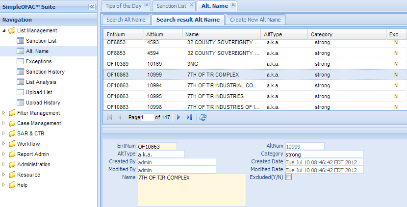
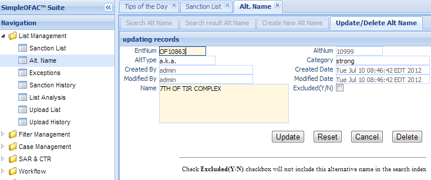
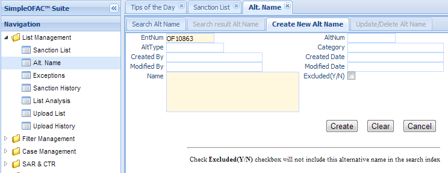

Alternative Name (Alt. Name or Alias)¶
Each Sanction List entry can have 0 to many Alternate names, or Aliases.This function is used to manage those Alternate names. Click the Alt Name in the left navigation menu under List management, a new Alt Name Tab folder will be created in the right panel.
There are 3 sub-Tab folders, Search Alt. Name (Alias), Search Result Alt. Name and Create New Alt. Name.
Note
Alts names must link to a Sanction List list entry.
Search Alt. Name (Alias)¶
Search Criteria
| Field Name | Description |
|---|---|
| entNum | Link to sanction list entry unique record identifier. |
| AltNum | Alt. name unique record identifier. |
| Name | Alternate identity name. |
| Alt. Type | Type of alternate identity (aka, fka, nka). |
| Category | Category of alternate identity. |
| CreatedByDate | Date and Time when this entry is created |
| CreatedByUser | User who create this entry. |
| ModifiedByDate | Last modified date and time. |
| ModifiedByUser | Last modified user. |
| AND | Select AND radio box if you want those criteria add together. |
| OR | Select OR radio box if you want to get the result if either criteria meet |
Functional buttons¶
- Find: – click Find button to search.
- Clear:– click Clear button to clear all the criteria.
Search Result Alt. Name¶
The top part is the table, shows the list of the Alt. Names (aliases) that meet the search criteria. The bottom part is the details of the selected entry
There are many one word Alt. Name; for example, OFAC entry 10938 (see screenshot above). Those one word Alt. Name (AKA) entries will cause many false positive alerts. We have an option to exclude it. Also see this link http://www.treasury.gov/resource-center/sanctions/OFAC-Enforcement/Pages/weak_strong_alias.aspx
Update/Delete Alt. Name¶
Double Click the selected record in the table to modify this entry. A new Tab folder “Update/Delete Alt. Name” will be added, as show below.
Functional buttons¶
- Update: – make changes on the Alt. Name, then save and switch back to “Search result Alt. Name” Tab. Some of the fields in this form are read only, like Altnum, created/modified user and date.
- Reset:– reset the data to its initial value, discard all the changes.
- Cancel:– Cancel this change and switch back to “Search result Alt. Name” Tab.
- Delete:– Delete this entry, then switch back to “Search result Alt. Name” Tab.
Create New Alt. Name¶
Select the “Create New Alt. Name” Tab to create a new entry.
| Field Name | Description |
|---|---|
| entNum | Link to sanction list entry unique record identifier. |
| AltNum | Alt. name unique record identifier; This is a read only field. |
| Name | Alternate identity name; This is a mandatory field |
| Alt. Type | Type of alternate identity (aka, fka, nka). |
| Category | Category of alternate identity. |
| CreatedByDate | Date and Time when the entry is created. It is a read only field. |
| CreatedByUser | User who create this entry. It is a read only field. |
| ModifiedByDate | Last modified date and time; It is a read only field. |
| ModifiedByUser | Last modified user; It is a read only field. |
Functional buttons¶
- Create: – Click the Create button to create a new Alt. Name entry and switch to “Search result Alt. Name” Tab. Name is a mandatory field, if it is empty, an error will show
- Clear:– Click the Clear button to clear all the fields
- Cancel:– Click the Cancel button to cancel operation and switch back to “Search result Alt. Name” Tab.